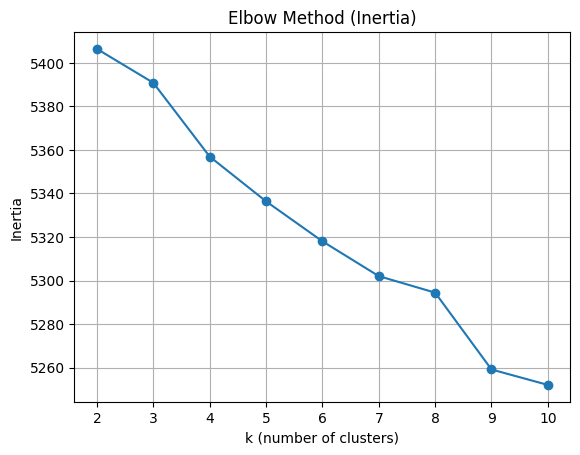
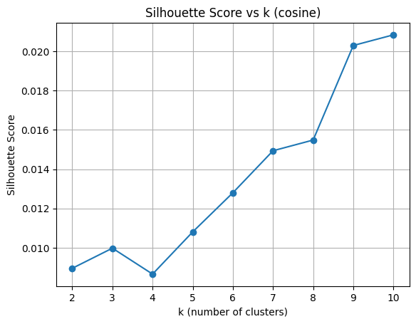
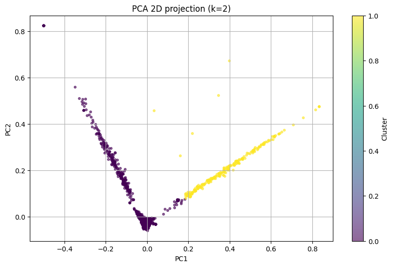
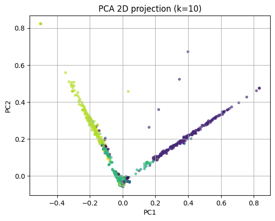

UTS: Document Clustering on Email/SMS Data#
Pipeline: load → clean text → TF‑IDF → choose K (elbow + silhouette) → KMeans clustering → top terms per cluster → 2D PCA plot → export results.
import re
import numpy as np
import pandas as pd
from pathlib import Path
import matplotlib.pyplot as plt
from sklearn.feature_extraction.text import TfidfVectorizer
from sklearn.cluster import KMeans
from sklearn.metrics import silhouette_score
from sklearn.decomposition import PCA
DATA_PATH = Path('spam.csv')
RANDOM_STATE = 42
pd.set_option('display.max_colwidth', 120)
# 2) Load dataset
df_raw = pd.read_csv(DATA_PATH, encoding='latin1')
# Keep only the essential columns
cols = [c for c in df_raw.columns if c.lower() in ['id', 'text']]
df = df_raw[cols].rename(columns={cols[0]:'id', cols[1]:'Text'}) if set(cols)==set(['id','Text']) or set(cols)==set(['id','text']) else df_raw[['id','Text']]
# Drop missing or empty Text
df = df.dropna(subset=['Text']).copy()
df['Text'] = df['Text'].astype(str)
print(df.shape)
df.head()
(5572, 2)
| id | Text | |
|---|---|---|
| 0 | 1 | Go until jurong point, crazy.. Available only in bugis n great world la e buffet... Cine there got amore wat... |
| 1 | 2 | Ok lar... Joking wif u oni... |
| 2 | 3 | Free entry in 2 a wkly comp to win FA Cup final tkts 21st May 2005. Text FA to 87121 to receive entry question(std t... |
| 3 | 4 | U dun say so early hor... U c already then say... |
| 4 | 5 | Nah I don't think he goes to usf, he lives around here though |
# 3) Text cleaning util
def clean_text(s: str) -> str:
s = s.lower()
s = re.sub(r'https?://\S+|www\.\S+', ' ', s) # URLs
s = re.sub(r'\S+@\S+', ' ', s) # emails
s = re.sub(r"[^a-z\s]", ' ', s) # keep letters and spaces
s = re.sub(r'\s+', ' ', s).strip()
return s
df['clean'] = df['Text'].apply(clean_text)
df[['id','Text','clean']].head(10)
| id | Text | clean | |
|---|---|---|---|
| 0 | 1 | Go until jurong point, crazy.. Available only in bugis n great world la e buffet... Cine there got amore wat... | go until jurong point crazy available only in bugis n great world la e buffet cine there got amore wat |
| 1 | 2 | Ok lar... Joking wif u oni... | ok lar joking wif u oni |
| 2 | 3 | Free entry in 2 a wkly comp to win FA Cup final tkts 21st May 2005. Text FA to 87121 to receive entry question(std t... | free entry in a wkly comp to win fa cup final tkts st may text fa to to receive entry question std txt rate t c s ap... |
| 3 | 4 | U dun say so early hor... U c already then say... | u dun say so early hor u c already then say |
| 4 | 5 | Nah I don't think he goes to usf, he lives around here though | nah i don t think he goes to usf he lives around here though |
| 5 | 6 | FreeMsg Hey there darling it's been 3 week's now and no word back! I'd like some fun you up for it still? Tb ok! XxX... | freemsg hey there darling it s been week s now and no word back i d like some fun you up for it still tb ok xxx std ... |
| 6 | 7 | Even my brother is not like to speak with me. They treat me like aids patent. | even my brother is not like to speak with me they treat me like aids patent |
| 7 | 8 | As per your request 'Melle Melle (Oru Minnaminunginte Nurungu Vettam)' has been set as your callertune for all Calle... | as per your request melle melle oru minnaminunginte nurungu vettam has been set as your callertune for all callers p... |
| 8 | 9 | WINNER!! As a valued network customer you have been selected to receivea å£900 prize reward! To claim call 090617014... | winner as a valued network customer you have been selected to receivea prize reward to claim call claim code kl vali... |
| 9 | 10 | Had your mobile 11 months or more? U R entitled to Update to the latest colour mobiles with camera for Free! Call Th... | had your mobile months or more u r entitled to update to the latest colour mobiles with camera for free call the mob... |
# 4) TF-IDF Vectorization (English stopwords)
tfidf = TfidfVectorizer(stop_words='english', ngram_range=(1,2), min_df=3, max_df=0.9)
X = tfidf.fit_transform(df['clean'])
print('TF-IDF shape:', X.shape)
TF-IDF shape: (5572, 4248)
# 5) Pick K using Elbow (inertia) and Silhouette
inertias = []
sil_scores = []
k_values = list(range(2, 11))
for k in k_values:
km = KMeans(n_clusters=k, random_state=RANDOM_STATE, n_init='auto')
labels = km.fit_predict(X)
inertias.append(km.inertia_)
# To speed up silhouette on large datasets, we can sample, but here we'll compute full
sil = silhouette_score(X, labels, metric='cosine')
sil_scores.append(sil)
print('Inertias:', inertias)
print('Silhouettes:', sil_scores)
Inertias: [5406.4613058500345, 5390.891546602865, 5356.969762747474, 5336.395249930176, 5318.023485407953, 5302.017998990319, 5294.412897344478, 5259.095099042767, 5251.996242955121]
Silhouettes: [0.008951589608217191, 0.009976773268926993, 0.008656504957489505, 0.01080590201764069, 0.012797982748356385, 0.014939202685210365, 0.015485448027011675, 0.02030170461711936, 0.020844063679907168]
# 6) Plot Elbow (Inertia)
plt.figure()
plt.plot(k_values, inertias, marker='o')
plt.title('Elbow Method (Inertia)')
plt.xlabel('k (number of clusters)')
plt.ylabel('Inertia')
plt.grid(True)
plt.show()

# 7) Plot Silhouette Scores
plt.figure()
plt.plot(k_values, sil_scores, marker='o')
plt.title('Silhouette Score vs k (cosine)')
plt.xlabel('k (number of clusters)')
plt.ylabel('Silhouette Score')
plt.grid(True)
plt.show()

# 8) Choose best k (max silhouette)
best_idx = int(np.argmax(sil_scores))
best_k = k_values[best_idx]
print('Best k by silhouette:', best_k)
kmeans = KMeans(n_clusters=best_k, random_state=RANDOM_STATE, n_init='auto')
labels = kmeans.fit_predict(X)
df['cluster'] = labels
df[['id','Text','cluster']].head(10)
Best k by silhouette: 10
| id | Text | cluster | |
|---|---|---|---|
| 0 | 1 | Go until jurong point, crazy.. Available only in bugis n great world la e buffet... Cine there got amore wat... | 6 |
| 1 | 2 | Ok lar... Joking wif u oni... | 8 |
| 2 | 3 | Free entry in 2 a wkly comp to win FA Cup final tkts 21st May 2005. Text FA to 87121 to receive entry question(std t... | 6 |
| 3 | 4 | U dun say so early hor... U c already then say... | 6 |
| 4 | 5 | Nah I don't think he goes to usf, he lives around here though | 7 |
| 5 | 6 | FreeMsg Hey there darling it's been 3 week's now and no word back! I'd like some fun you up for it still? Tb ok! XxX... | 0 |
| 6 | 7 | Even my brother is not like to speak with me. They treat me like aids patent. | 0 |
| 7 | 8 | As per your request 'Melle Melle (Oru Minnaminunginte Nurungu Vettam)' has been set as your callertune for all Calle... | 6 |
| 8 | 9 | WINNER!! As a valued network customer you have been selected to receivea å£900 prize reward! To claim call 090617014... | 6 |
| 9 | 10 | Had your mobile 11 months or more? U R entitled to Update to the latest colour mobiles with camera for Free! Call Th... | 6 |
Clustering dengan K=2#
Berikut adalah hasil clustering dengan 2 cluster sebagai perbandingan:
# Clustering dengan K=2
k_2 = 2
kmeans_2 = KMeans(n_clusters=k_2, random_state=RANDOM_STATE, n_init='auto')
labels_2 = kmeans_2.fit_predict(X)
df['cluster_k2'] = labels_2
# Hitung silhouette score untuk k=2
sil_2 = silhouette_score(X, labels_2, metric='cosine')
print(f'Silhouette Score untuk k=2: {sil_2:.4f}')
print(f'Inertia untuk k=2: {kmeans_2.inertia_:.2f}')
print(f'\nDistribusi cluster (k=2):')
print(df['cluster_k2'].value_counts().sort_index())
df[['id','Text','cluster_k2']].head(10)
Silhouette Score untuk k=2: 0.0090
Inertia untuk k=2: 5406.46
Distribusi cluster (k=2):
0 5350
1 222
Name: cluster_k2, dtype: int64
| id | Text | cluster_k2 | |
|---|---|---|---|
| 0 | 1 | Go until jurong point, crazy.. Available only in bugis n great world la e buffet... Cine there got amore wat... | 0 |
| 1 | 2 | Ok lar... Joking wif u oni... | 0 |
| 2 | 3 | Free entry in 2 a wkly comp to win FA Cup final tkts 21st May 2005. Text FA to 87121 to receive entry question(std t... | 0 |
| 3 | 4 | U dun say so early hor... U c already then say... | 0 |
| 4 | 5 | Nah I don't think he goes to usf, he lives around here though | 0 |
| 5 | 6 | FreeMsg Hey there darling it's been 3 week's now and no word back! I'd like some fun you up for it still? Tb ok! XxX... | 0 |
| 6 | 7 | Even my brother is not like to speak with me. They treat me like aids patent. | 0 |
| 7 | 8 | As per your request 'Melle Melle (Oru Minnaminunginte Nurungu Vettam)' has been set as your callertune for all Calle... | 0 |
| 8 | 9 | WINNER!! As a valued network customer you have been selected to receivea å£900 prize reward! To claim call 090617014... | 0 |
| 9 | 10 | Had your mobile 11 months or more? U R entitled to Update to the latest colour mobiles with camera for Free! Call Th... | 0 |
# Top terms per cluster untuk K=2
feature_names_2 = np.array(tfidf.get_feature_names_out())
centers_2 = kmeans_2.cluster_centers_
topn_2 = 15
cluster_terms_2 = {}
for c in range(k_2):
idx = np.argsort(centers_2[c])[::-1][:topn_2]
cluster_terms_2[c] = feature_names_2[idx].tolist()
print("Top Terms untuk setiap cluster (k=2):")
for c, terms in cluster_terms_2.items():
print(f"\nCluster {c} top terms:")
print(', '.join(terms))
print('-'*60)
Top Terms untuk setiap cluster (k=2):
Cluster 0 top terms:
ok, just, ll, come, ur, good, know, got, like, time, home, going, free, want, sorry
------------------------------------------------------------
Cluster 1 top terms:
gt, lt, lt gt, gt min, lt decimal, decimal gt, decimal, like lt, like, ll, min, gt minutes, minutes, gt mins, gt lt
------------------------------------------------------------
# Visualisasi 2D dengan PCA untuk K=2
pca_2 = PCA(n_components=2, random_state=RANDOM_STATE)
coords_2 = pca_2.fit_transform(X.toarray()) if hasattr(X, 'toarray') else pca_2.fit_transform(X)
plt.figure(figsize=(10, 6))
plt.scatter(coords_2[:,0], coords_2[:,1], s=10, alpha=0.6, c=labels_2, cmap='viridis')
plt.title(f'PCA 2D projection (k=2)')
plt.xlabel('PC1')
plt.ylabel('PC2')
plt.colorbar(label='Cluster')
plt.grid(True)
plt.show()

Kluster dengan K Terbaik#
# 9) Top terms per cluster
feature_names = np.array(tfidf.get_feature_names_out())
centers = kmeans.cluster_centers_
topn = 15
cluster_terms = {}
for c in range(best_k):
idx = np.argsort(centers[c])[::-1][:topn]
cluster_terms[c] = feature_names[idx].tolist()
for c, terms in cluster_terms.items():
print(f"Cluster {c} top terms:")
print(', '.join(terms))
print('-'*60)
Cluster 0 top terms:
like, feel like, feel, dat, dont, like dat, know, dun, just, smile, ok, sounds like, time, send, fr
------------------------------------------------------------
Cluster 1 top terms:
gt, lt, lt gt, gt min, decimal gt, lt decimal, decimal, like lt, min, like, ll, gt minutes, minutes, gt lt, come
------------------------------------------------------------
Cluster 2 top terms:
know, let, let know, don, don know, dont know, dont, lemme know, lemme, want, ll, menu, need, problem, dating service
------------------------------------------------------------
Cluster 3 top terms:
ll later, sorry ll, later, sorry, ll, meeting, later meeting, meeting ll, sorry meeting, bye, fuck, lt gt, aight, lt, gt
------------------------------------------------------------
Cluster 4 top terms:
just, just got, message, right, send, got, free, text, week, phone, ur, send message, tone, ll, phone right
------------------------------------------------------------
Cluster 5 top terms:
going, day, great, fine, good, hope, night, great day, home, tomorrow, good day, happy, going sleep, wish, dear
------------------------------------------------------------
Cluster 6 top terms:
come, ur, got, time, free, good, want, home, da, ll, lor, text, need, send, tell
------------------------------------------------------------
Cluster 7 top terms:
think, don, don think, love, time, like, good, goes, ur, send, need, people, day, right, dont think
------------------------------------------------------------
Cluster 8 top terms:
ok, ok lor, lor, thanx, ur, come, ok thanx, ask, ok prob, leave, wat, ok ok, prob, wan, home
------------------------------------------------------------
Cluster 9 top terms:
love, sorry, babe, late, miss, hey, life, im, day, hope, da, need, ya, good, home
------------------------------------------------------------
# 10) 2D Visualization with PCA
pca = PCA(n_components=2, random_state=RANDOM_STATE)
coords = pca.fit_transform(X.toarray()) if hasattr(X, 'toarray') else pca.fit_transform(X)
plt.figure()
plt.scatter(coords[:,0], coords[:,1], s=10, alpha=0.6, c=labels)
plt.title(f'PCA 2D projection (k={best_k})')
plt.xlabel('PC1')
plt.ylabel('PC2')
plt.grid(True)
plt.show()

# 11) Export clustered results
out_csv = Path('datasets/clustered_spam.csv')
out_2 = Path('datasets/clustered_spam_k2.csv')
df[['id','Text','clean','cluster']].to_csv(out_csv, index=False)
df[['id','Text','clean','cluster_k2']].to_csv(out_2, index=False)
print('Saved')
---------------------------------------------------------------------------
OSError Traceback (most recent call last)
Cell In[14], line 4
2 out_csv = Path('datasets/clustered_spam.csv')
3 out_2 = Path('datasets/clustered_spam_k2.csv')
----> 4 df[['id','Text','clean','cluster']].to_csv(out_csv, index=False)
5 df[['id','Text','clean','cluster_k2']].to_csv(out_2, index=False)
6 print('Saved')
File ~\AppData\Local\Programs\Python\Python311\Lib\site-packages\pandas\util\_decorators.py:211, in deprecate_kwarg.<locals>._deprecate_kwarg.<locals>.wrapper(*args, **kwargs)
209 else:
210 kwargs[new_arg_name] = new_arg_value
--> 211 return func(*args, **kwargs)
File ~\AppData\Local\Programs\Python\Python311\Lib\site-packages\pandas\core\generic.py:3720, in NDFrame.to_csv(self, path_or_buf, sep, na_rep, float_format, columns, header, index, index_label, mode, encoding, compression, quoting, quotechar, lineterminator, chunksize, date_format, doublequote, escapechar, decimal, errors, storage_options)
3709 df = self if isinstance(self, ABCDataFrame) else self.to_frame()
3711 formatter = DataFrameFormatter(
3712 frame=df,
3713 header=header,
(...) 3717 decimal=decimal,
3718 )
-> 3720 return DataFrameRenderer(formatter).to_csv(
3721 path_or_buf,
3722 lineterminator=lineterminator,
3723 sep=sep,
3724 encoding=encoding,
3725 errors=errors,
3726 compression=compression,
3727 quoting=quoting,
3728 columns=columns,
3729 index_label=index_label,
3730 mode=mode,
3731 chunksize=chunksize,
3732 quotechar=quotechar,
3733 date_format=date_format,
3734 doublequote=doublequote,
3735 escapechar=escapechar,
3736 storage_options=storage_options,
3737 )
File ~\AppData\Local\Programs\Python\Python311\Lib\site-packages\pandas\util\_decorators.py:211, in deprecate_kwarg.<locals>._deprecate_kwarg.<locals>.wrapper(*args, **kwargs)
209 else:
210 kwargs[new_arg_name] = new_arg_value
--> 211 return func(*args, **kwargs)
File ~\AppData\Local\Programs\Python\Python311\Lib\site-packages\pandas\io\formats\format.py:1189, in DataFrameRenderer.to_csv(self, path_or_buf, encoding, sep, columns, index_label, mode, compression, quoting, quotechar, lineterminator, chunksize, date_format, doublequote, escapechar, errors, storage_options)
1168 created_buffer = False
1170 csv_formatter = CSVFormatter(
1171 path_or_buf=path_or_buf,
1172 lineterminator=lineterminator,
(...) 1187 formatter=self.fmt,
1188 )
-> 1189 csv_formatter.save()
1191 if created_buffer:
1192 assert isinstance(path_or_buf, StringIO)
File ~\AppData\Local\Programs\Python\Python311\Lib\site-packages\pandas\io\formats\csvs.py:241, in CSVFormatter.save(self)
237 """
238 Create the writer & save.
239 """
240 # apply compression and byte/text conversion
--> 241 with get_handle(
242 self.filepath_or_buffer,
243 self.mode,
244 encoding=self.encoding,
245 errors=self.errors,
246 compression=self.compression,
247 storage_options=self.storage_options,
248 ) as handles:
249
250 # Note: self.encoding is irrelevant here
251 self.writer = csvlib.writer(
252 handles.handle,
253 lineterminator=self.lineterminator,
(...) 258 quotechar=self.quotechar,
259 )
261 self._save()
File ~\AppData\Local\Programs\Python\Python311\Lib\site-packages\pandas\io\common.py:734, in get_handle(path_or_buf, mode, encoding, compression, memory_map, is_text, errors, storage_options)
732 # Only for write methods
733 if "r" not in mode and is_path:
--> 734 check_parent_directory(str(handle))
736 if compression:
737 if compression != "zstd":
738 # compression libraries do not like an explicit text-mode
File ~\AppData\Local\Programs\Python\Python311\Lib\site-packages\pandas\io\common.py:597, in check_parent_directory(path)
595 parent = Path(path).parent
596 if not parent.is_dir():
--> 597 raise OSError(rf"Cannot save file into a non-existent directory: '{parent}'")
OSError: Cannot save file into a non-existent directory: 'datasets'